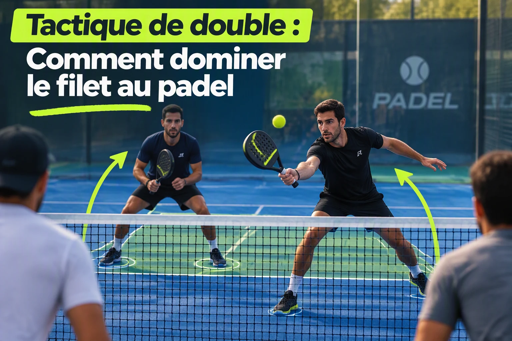

Tactique de double : Comment dominer le filet au padel
Au padel, la règle d'or est simple : qui tient le filet gagne le point. Contrairement au tennis où l'on peut briller depuis le fond de court, le padel moderne se gagne à la volée. Si vous passez tout votre match collé à la vitre de fond, vos adversaires vous mettront constamment sous pression.

1. Pourquoi le filet est-il la zone clé ?
En étant positionné près du filet, vous réduisez considérablement le temps de réaction de vos adversaires et vous donnez un angle de frappe descendant (le smash ou la volée amortie) qui est très difficile à défendre.
Publicité responsive intégrée
2. Comment monter efficacement au filet ?
On ne se précipite pas au filet n'importe comment, au risque de se faire lober facilement. Pour monter, il faut impérativement :
- Jouer un lob profond ou une balle lente : Vos adversaires doivent être repoussés en fond de court pour ne pas pouvoir vous attaquer directement.
- Monter ensemble : Au padel, la paire est un bloc. On ne monte jamais tout seul, sinon un espace vide béant s'ouvre au milieu.
3. La gestion de l'espace et la communication
La communication avec votre partenaire est primordiale. Vous devez couvrir le terrain comme une seule personne, en coulissant latéralement selon d'où vient la balle.
💡 L'astuce du coach
N'essayez pas de faire un coup gagnant à chaque volée. Au padel, la patience prime : construisez l'échange avec des volées profondes au centre pour disloquer la défense adverse.
Besoin d'un meilleur contrôle à la volée ?
Une bonne raquette de contrôle et des poignees sèches changent tout sur les volées rapides au filet.
Voir les accessoires de grip sur Amazon